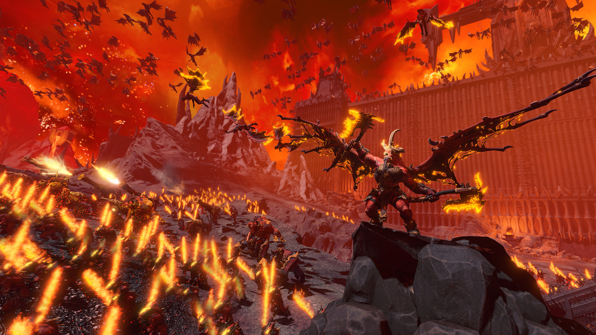

There’s a lot to love about Command & Conquer: Red Alert 2. From the ludicrous unit types to the corny FMV cutscenes, you will struggle to find a strategy game with as much personality and charm as this RTS. It may not be as wild as the sequel, which managed to cast J.K. Simmons, Tim Curry, and George Takei, but there’s a degree of sincerity amidst the bombast. And if you’re just looking for something with solid strategy gaming chops, then Red Alert 2 hasn’t aged a day in the two decades since its release. You’ll find two varied campaigns to barrel through – one from the US perspective and one from the Soviet Union – and a tightly balanced multiplayer offering with a couple of endlessly addictive modes. No other strategy game lets you pit democratic dolphins against Soviet squids, and for that alone we’ll always adore Red Alert 2.
Divinity: Original Sin 2
(Image credit: Emejarkejou)
Who will you be? A flesh-eating Elf, an Imperial Lizard or an Undead, risen from the grave? With Divinity: Original Sin 2, the possibilities are near-limitless. Gather your party and develop relationships with your companions. Blast your opponents in deep, tactical, turn-based combat. Use the environment as a weapon, use height to your advantage, and manipulate the elements themselves to seal your victory. Explore the vast world of Rivellon alone or in a party of up to 4 players in drop-in/drop-out co-op. Go anywhere, unleash your imagination, and explore endless ways to interact with the world. Divinity is finally arriving on iPad, with no compromise, and no microtransactions.
Total War: Warhammer 3

(Image credit: GondičPetrovsky)
Total War: Warhammer 3, the conclusion to Creative Assembly's Warhammer trilogy, is also its strangest and most experimental, letting players leave the traditional Total War sandbox every 30 or so turns to journey through the Realm of Chaos, where the domains of the Chaos gods exist, culminating in huge survival battles that draw from tower defence games, with fortifications, in-battle recruitment and waves of enemies.
It's an impressive campaign, though the narrative elements and Realm of Chaos jaunts make it a bit more linear than most. The real treat, though, is the list of factions. The Chaos factions in particular are a monstrous delight, especially the Daemons of Chaos, which not only lets you recruit units from every daemonic faction, you even get a fully customisable leader with limbs that you can mix and match. It's basically an RPG.
There's plenty to keep you occupied, and more on the horizon, with the Immortal Empires mega-campaign that combines all three games into one big brawl on its way.